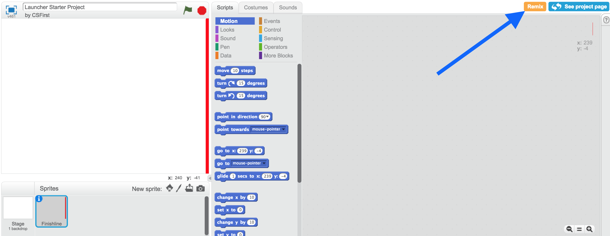
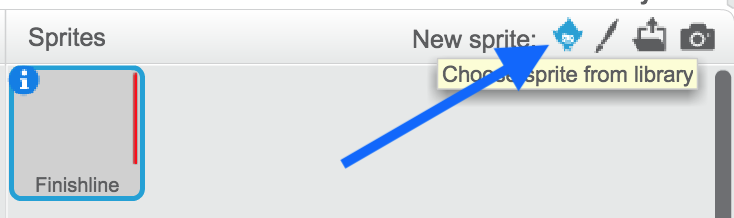
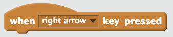
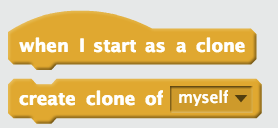
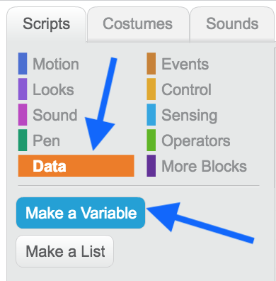
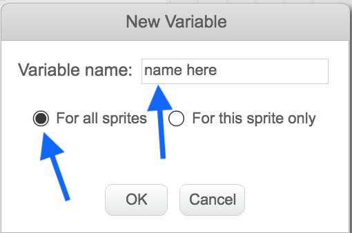

In this codelab, you'll learn how to create a launcher game and keep score.
Use the arrow keys to point the fish in a specific direction, then use the space bar to launch the fish. Get to the finish line!
What you'll learn
- Review loops.
- Practice using if/else conditional blocks.
- Practice using variables.
- Learn about cloning.
Open the starter project and click Remix.

First, we are going to get a sprite moving across the screen until it reaches the finish line.
Useful blocks:
Steps
- Select a sprite from the sprite library to be player 1.

- Make the sprite move continuously across the screen.
- Have the sprite stop once it reaches the finish line.
- Set a starting position for your sprite. Your sprite should also return here after touching the finish line.
Next, we are going to control player 1's motion.
Useful block:

Steps
- Have your sprite turn as you press the left and right arrow keys.
- If necessary, smooth out your sprite's turning.
Now, we are going to add enemies and have them spawn after each win.
Useful blocks:

Steps
- Add another sprite as an enemy.
- Make the enemy sprite bounce around the stage
- Make the enemy sprite clone itself whenever player 1 reaches the finish line.
- Have each enemy sprite clone start off pointing in a random direction.
Now, we are going to add enemies and have them spawn after each win.
Steps
- Create a "score" variable for the player sprite. Write your choice for the name of your variable where it says "name here".
 
- Use a conditional to add to the "score" variable when the player reaches the finish line.
- Have the score reset to 0 when a person restarts the game.
If you finish early, implement one or more of the following features for a bonus checkoff.